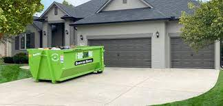

✅Recycling
✅Recycling
IMOTOTO is currently investing in recyclable materials such as Plastic, Paper & Card boards, Steel, Aluminum, Drink Cans and Food wastes from EKSWMA Waste Transfer Station facility and you get a discount each time you recycle with us when next you need to dump your waste at IMOTOTO.
The long term focus of our recycling initiatives is aimed at leading the global way in the 3 R’s: Reduce, Reuse, Recycle.

✅Debris Removal/Pick-Up
At IMOTOTO, we understand that keeping a construction or renovation site clean and organized is essential for safety and efficiency. That's why we offer comprehensive debris pick-up services to our clients, ensuring that your site remains free of clutter and debris.
Our debris pick-up services are designed to meet the specific needs of your project. We work closely with you to develop a customized plan that takes into account the size of your site, the amount of debris that needs to be removed, and any special requirements you may have.
Our team of experienced professionals is equipped with the tools and knowledge needed to safely and efficiently remove debris from your site. We use high-quality equipment and follow strict safety protocols to ensure that our debris pick-up services are completed to the highest standard.
We are committed to providing our clients with exceptional service and value, which is why we work quickly and efficiently to complete debris pick-ups on time and within budget. We understand that time is of the essence when it comes to construction and renovation projects, and we strive to minimize downtime and disruptions to your project.
At IMOTOTO, we take pride in our commitment to excellence and our dedication to our clients. We believe that our debris pick-up services are an essential part of our commitment to safety and efficiency, and we work tirelessly to ensure that your site remains clean and organized throughout the duration of your project.
If you are looking for a reliable and experienced demolition company that offers comprehensive debris pick-up services, look no further than IMOTOTO. Contact us today to learn more about our services and how we can help you with your next project.
 ✅Dumpster Rental
✅Dumpster Rental
IMOTOTO is your one-stop shopping solution for all of your disposal and demolition needs. We provide a wide range of services, including demolition, dumpster rental, junk removal, chimney removal, and basement clean up. Whether you're a homeowner or a business owner, we have the experience and expertise to handle any project, large or small.
Our commitment to quality and customer satisfaction sets us apart from the competition. We use state-of-the-art equipment and innovative techniques to ensure that we deliver the best possible service every time you use our services. We also offer competitive pricing and flexible payment options to help you save money and manage your budget
At IMOTOTO, we offer a range of dumpster sizes to fit your specific needs. Our selection includes 10, 15, 20, 30, and 40 yard dumpsters, each with its own unique capacity and dimensions